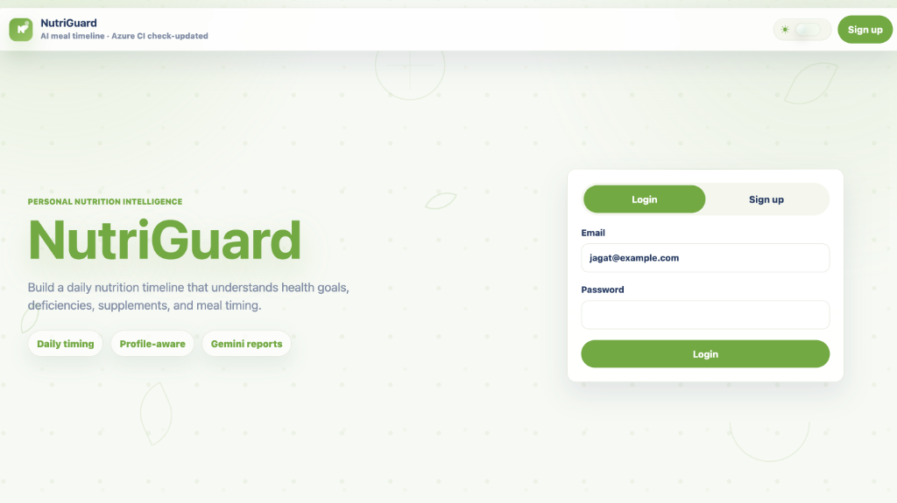
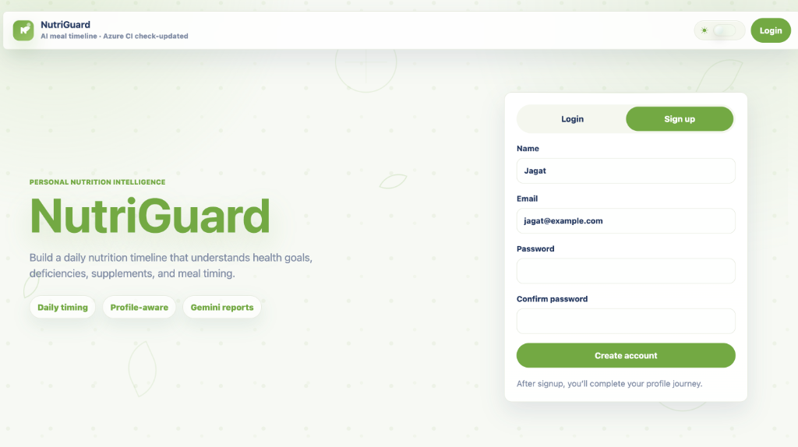
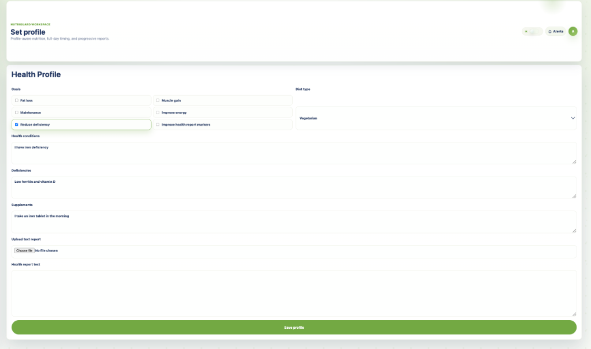
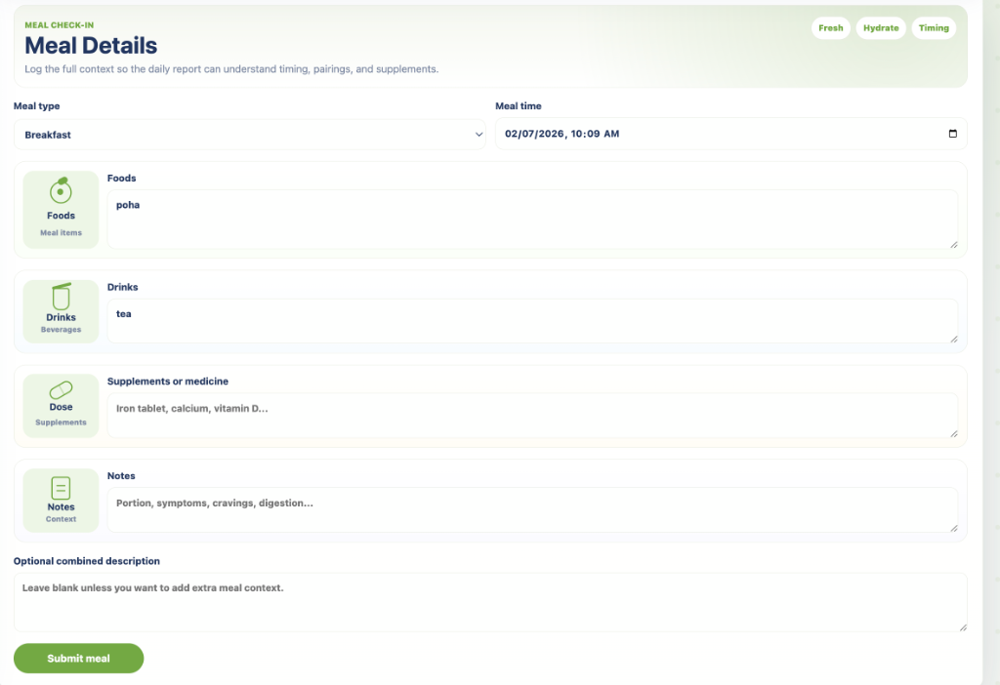
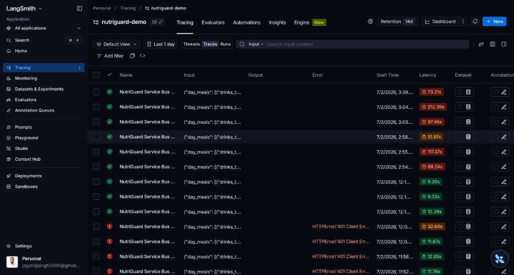
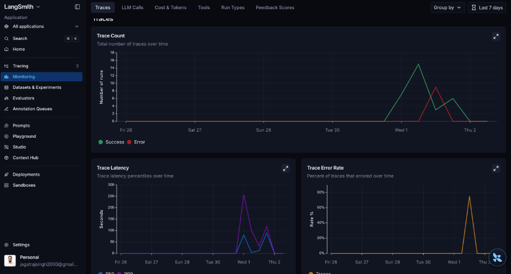

NutriGuard AI
AI-powered personal nutrition advisor that analyzes your meals, detects health risks, and delivers personalized guidance — powered by LangGraph agents & Gemini.
Why NutriGuard?
Millions track meals but lack actionable, personalized guidance that considers their unique health conditions, deficiencies, and goals.
Profile-Aware, AI-Powered Nutrition
NutriGuard lets users define their health goals, deficiencies, dietary preferences, supplements, and conditions — then uses AI agents to analyze every meal in that context.
What Users Can Define
- Health Goals — fat loss, muscle gain, maintenance, energy, reduce deficiency, improve lab markers
- Diet Type — vegetarian, eggetarian, vegan, non-vegetarian
- Deficiencies — iron, vitamin D, B12, calcium, etc.
- Health Conditions — diabetes, PCOS, thyroid, cholesterol
- Supplements — iron tablets, multivitamins, vitamin D3
- Health Reports — upload lab reports (.txt/.csv) for AI context
What AI Analyzes
- Meal Composition — foods, drinks, supplements per meal
- Nutrient Interactions — tea + iron, calcium + iron timing conflicts
- Day Timeline — cross-meal pattern detection across all meals
- Risk Assessment — personalized flags based on user profile
- RAG-Enhanced Suggestions — curated nutrition knowledge base
- Safety Guardrails — no diagnoses, no dosage changes, medical disclaimers
System Architecture
3-service microservice architecture with async event-driven AI processing.
High-Level Design (HLD)
Tech Stack
Plain CSS (dark mode)
State-driven SPA
No external UI libs
SQLAlchemy ORM
JWT Auth (HS256)
PBKDF2 password hash
Gemini + OpenAI
Local RAG retriever
Provider fallback chain
Azure Static Web Apps
Azure Service Bus
PostgreSQL 16 + Docker
Metric events table
Admin dashboard
PII sanitization
Load testing
Stress testing
RAGAS RAG evaluation
ACR Docker builds
Auto-deploy on push
SWA PR previews
Ayurveda combinations
Tag-scored retrieval
Evidence labeling
LangGraph Agent Pipeline
A 3-stage linear DAG processes each meal through specialized AI agents, each building on the previous stage's output.
carbs, beverages, issues
+ RAG context retrieval
suggestions, safety
Shown to user
What Each Agent Does
Output: Structured JSON
• foods & portions
• carb & protein sources
• beverages detected
• possible issues
Fallback: Keyword extraction (poha, tea, etc.)
Output: Risk flags array
• 🍵 tea near iron supplement
• 🥛 calcium near iron
• 🕐 short meal gap (< 90 min)
• 🥩 low protein for goals
Uses: RAG knowledge retrieval
Output: Structured report
• 📋 Meal Summary
• ⚠️ Needs Attention
• 💡 Suggestions
• 🛡️ Safety Notes
Rules: No markdown, no diagnoses
LLM Provider Chain
3-tier fallback ensures the system never fails — even if all LLM providers are down, rule-based analysis keeps working.
Primary • Multi-key rotation
gemini-3-flash-preview
Fallback • gpt-4o-mini
$0.15/1M in • $0.60/1M out
Zero cost • Always works
Keyword + rule engine
RAG System
Local keyword & tag-scored retriever enriches the Health Risk Agent with curated nutrition knowledge before LLM generation.
How Retrieval Works
Knowledge Base
End-to-End User Journey
From signup to personalized nutrition report in minutes.
supplements, conditions
deeper AI context
supplements, notes
in background
suggestions, safety
React Frontend
Clean, responsive SPA built with React 18 + Vite — dark/light mode, glassmorphism UI, mobile-first design.
Frictionless Authentication
Clean, split-screen login and signup flows with built-in dark mode support.


Health Profile Setup
Capturing goals, diet, deficiencies, and conditions to personalize AI advice.

Intuitive Meal Logger
Structured logging of foods, drinks, and supplements with dynamic theming.

Actionable Daily Reports
Context-aware analysis grouping findings into Needs Attention, Suggestions, and Safety.

Database Design — 10 Tables
| Table | Purpose | Key Fields |
|---|---|---|
| users | User accounts | name, email, password_hash, is_admin |
| user_profiles | Health profiles | goals (JSON), diet_type, deficiencies, supplements, health_report_text |
| meal_logs | Meal records | foods_text, drinks_text, supplements_text, meal_type, status |
| nutrition_flags | AI-detected risk flags | type, severity, message (per meal) |
| daily_reports | AI nutrition reports | summary, recommendations (JSON), safety_note |
| report_feedback | User feedback | category, rating (liked/disliked), comment |
| outbox_events | Event queue | event_type, payload (JSON), status |
| metric_events | All observability metrics | name, source, payload (JSON) — latency, tokens, fallbacks |
| rag_eval_runs | RAG evaluation results | hit_rate, cases_passed, metrics (JSON) |
| notifications | Meal reminders | type, title, message, status, notification_date |
Admin Dashboard — Real Metrics
DB-backed product metrics from the deployed NutriGuard instance (26 Jun – 02 Jul 2026).
Daily Trends & LLM Fallback
| 2026-06-26 | 0 |
| 2026-06-27 | 0 |
| 2026-06-28 | 0 |
| 2026-06-29 | 0 |
| 2026-06-30 | 0 |
| 2026-07-01 | 13 |
| 2026-07-02 | 17 |
| 2026-06-26 | 0 |
| 2026-06-27 | 0 |
| 2026-06-28 | 0 |
| 2026-06-29 | 0 |
| 2026-06-30 | 0 |
| 2026-07-01 | 8 |
| 2026-07-02 | 17 |
OpenAI answer 3
OpenAI fallback 0 · Rule fallback 0
OpenAI answer 3
OpenAI fallback 0 · Rule fallback 0
OpenAI answer 3
OpenAI fallback 0 · Rule fallback 0
RAGAS / RAG Quality
Source: local_ragas · Last published: 02/07/2026, 11:23:58 · Judge: OpenAI
| Test Case | Question | Recall | Precision |
|---|---|---|---|
| 🥗 protein_veg_breakfast | What should a vegetarian user add to poha breakfast for better protein? | 100% | 40% |
| 🍵 iron_tea_timing | What should a user with iron deficiency know about tea near meals? | 100% | 20% |
| 🏋️ fat_loss_satiety | What should a fat-loss meal recommendation prioritize? | 100% | 20% |
| 🍃 ayurveda_milk_fruit | How should Ayurveda combination guidance be presented for milk and fruit? | 100% | 17% |
LangSmith Integration
Optional LangSmith tracing for deep observability into the AI pipeline — with built-in PII protection.
What's Traced
- Agent latency — duration_ms per agent stage (Meal Analyzer, Health Risk, Report)
- LLM provider status — which provider handled each call (Gemini/OpenAI/rule)
- Token usage — input/output tokens per call, estimated cost
- API request metrics — method, path, status_code, duration_ms for every request
- Trace IDs — appear in backend logs, Service Bus payload, and orchestrator logs for end-to-end correlation
PII Protection
health_report_text is automatically redacted before sending to LangSmith to protect sensitive medical data.metric_events table — no external dependency required for the admin dashboard.LangSmith Dashboard
Live monitoring of AI traces, latency percentiles, errors, and token usage.


Agent Latency, Load Test & Token Costs
| Agent | Runs | Avg | P95 | Max | Fallback |
|---|---|---|---|---|---|
| meal analyzer | 6 | 43,271ms | 161,164ms | 161,164ms | 0 |
| health risk | 6 | 37,087ms | 83,409ms | 83,409ms | 0 |
| report | 6 | 26,198ms | 55,446ms | 55,446ms | 0 |
/users/1/profile
| Provider | Calls | Input | Output | Total | Cost |
|---|---|---|---|---|---|
| gemini | 3 | 3,436 | 611 | 9,406 | $0.00 |
| Agent | Calls | Input | Output | Total | Cost |
|---|---|---|---|---|---|
| meal analyzer | 1 | 120 | 69 | 508 | $0.00 |
| health risk | 1 | 1,560 | 198 | 3,614 | $0.00 |
| report | 1 | 1,756 | 344 | 5,284 | $0.00 |
Testing Strategy
• API/agent latency computation
• LLM fallback metric tracking
• Password hash round-trip
• Health condition normalization
• Notification timezone handling
• ThreadPoolExecutor concurrency
• avg / p95 / max latency
• Status code distribution
• Auto-publish to dashboard
• Bearer token + auto-login
• 12 endpoints exercised
• Smoke (1 user) → Load (20)
• → Pressure (50) → Recovery
• Per-endpoint latency breakdown
• Creates real data + triggers LLM
Azure Cloud Architecture
Deployed to Azure with cost-optimized container apps, CI/CD via GitHub Actions.
Production Challenges
Key Design Decisions
What's Next
Planned improvements to make NutriGuard even smarter and more reliable.
Thank You
NutriGuard AI — Making nutrition personal, safe, and intelligent.